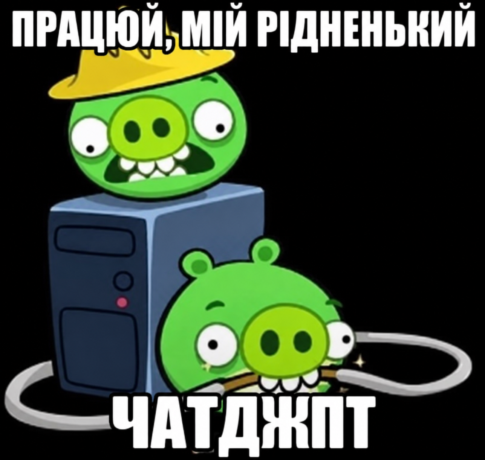

Що таке штучний інтелект?
Штучний інтелект (AI) — це напрямок комп'ютерних наук, який займається створенням систем, здатних виконувати завдання, що потребують людського мислення.
Сучасні AI-системи використовуються в медицині, транспорті, освіті та бізнесі. Вони допомагають аналізувати великі обсяги даних, знаходити закономірності та автоматизувати процеси.
Штучний інтелект став однією з найважливіших технологій XXI століття.
Переваги AI
- Автоматизація процесів
- Швидка обробка даних
- Підвищення продуктивності
- Підтримка прийняття рішень
Зображення

Додаткова інформація
AI використовується для створення чат-ботів, систем розпізнавання зображень та голосових помічників.